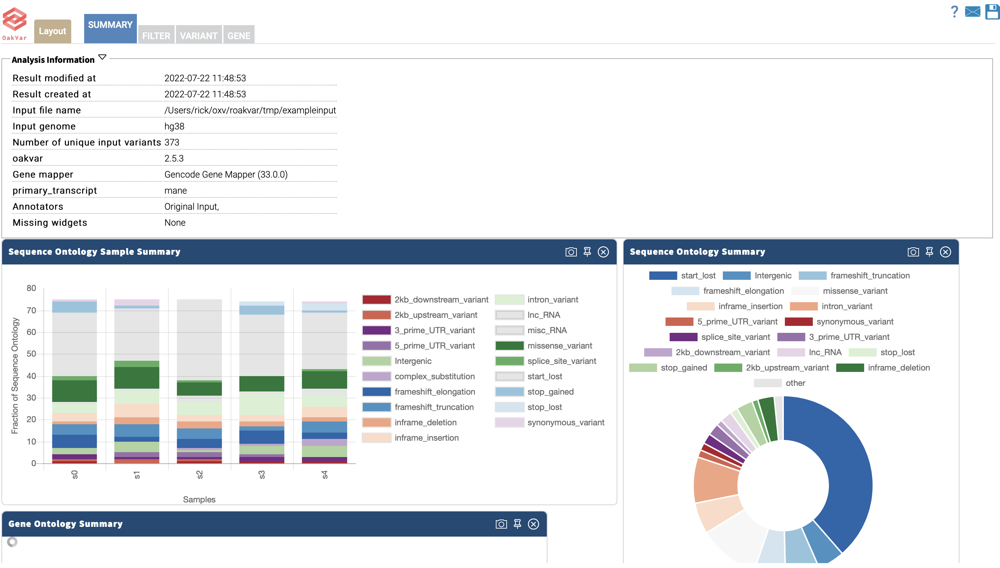
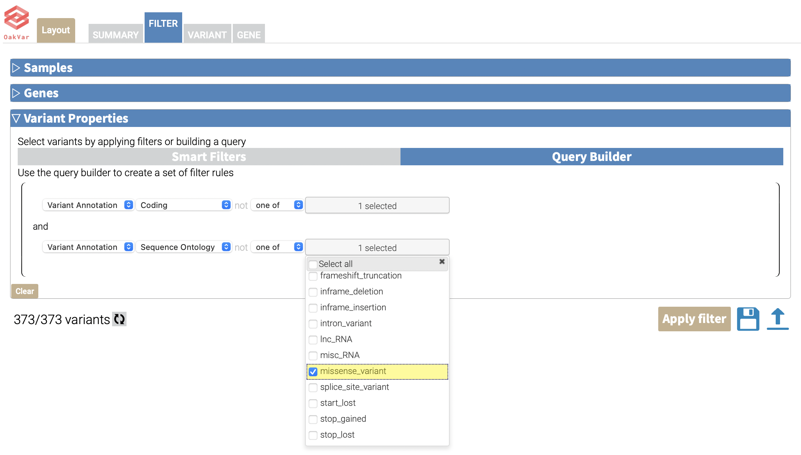
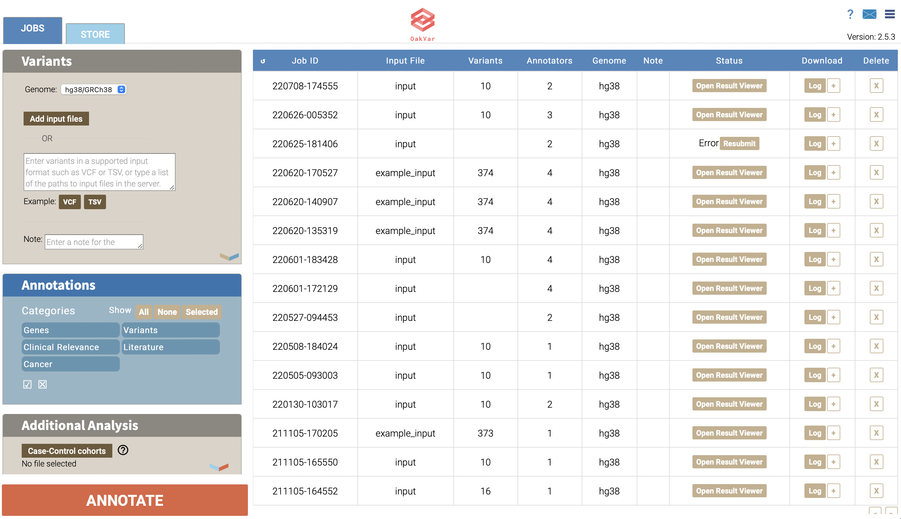
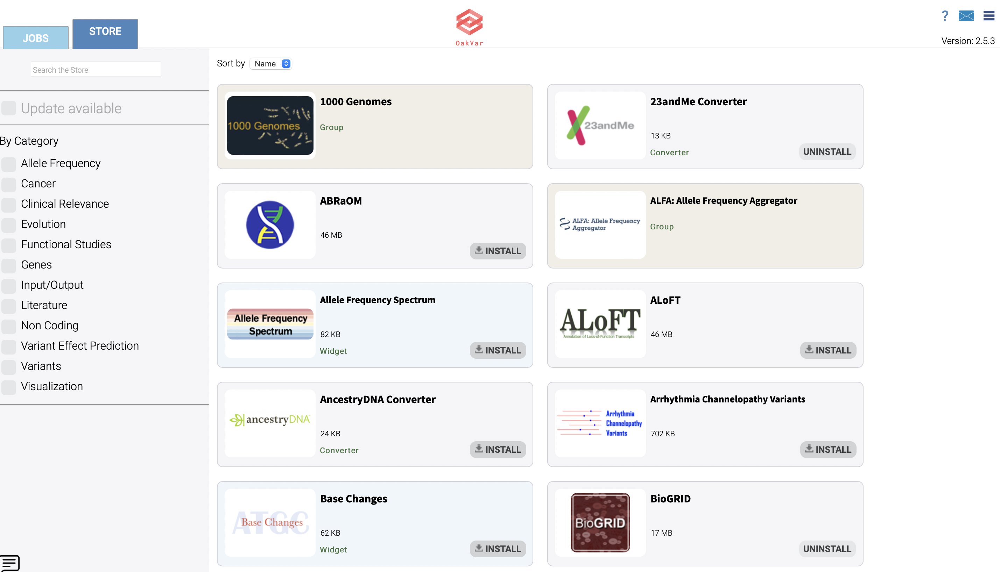

Tutorial
Installation
First, let's install OakVar.
pip install oakvar
Setup
Then, we set up OakVar, including configuration files, system folders, an OakVar account, and OakVar store cache files.
ov system setup
Check system configuration
How OakVar has been set up can be viewed with ov config system command.
ov config system
publish_url: https://store.oakvar.com
store_url: https://store.oakvar.com
...
default_assembly: hg38
sys_conf_path: /Users/Shared/oakvar/conf/system.yml
root_dir: /Users/Shared/oakvar
modules_dir: /Users/Shared/oakvar/modules
conf_dir: /Users/Shared/oakvar/conf
jobs_dir: /Users/Shared/oakvar/jobs
log_dir: /Users/Shared/oakvar/logs
modules_dir is where OakVar modules for conversion, mapping, annotation, and reporting as well as OakVar applications are stored.
Install ClinVar annotation module
In this tutorial, we will annotate variants with ClinVar. To do so, we install the ClinVar module.
ov module install clinvar
Uninstall a module
Just to practice uninstalling a module, we'll install and then uninstall BioGRID.
ov module install biogrid
ov module uninstall biogrid
Create an example input
Next, we need some variants to annotate. OakVar has a built-in variant file for this purpose.
ov new exampleinput
This will create an example input file, exampleinput, in the current directory.
Run an annotation job
Now, we annotate the example input file with ClinVar and then create a result VCF file with annotated variants. -a option controls annotation sources and -t option report formats.
ov run exampleinput -a clinvar -t vcf
This will create exampleinuput.vcf which will have the input variants annotated with ClinVar. Additionally, exampleinput.sqlite will be created. This file is a SQLite database file with annotated variants.
Examine the annotated variants
Let's examine the annotated variants in the previous step. ov report is used to show or generate the output of annotated variants.
ov report exampleinput.sqlite -t stdout
This will print out the annotated variants to the screen. -t stdout tells ov report to use stdoutreporter module, which is a reporter module and will receive annotated variants, variant by variant, from ov report and convert it to the standard output of the terminal.
Generate an Excel report of annotated variants
There are more reporter modules. excelreporter, an Excel format reporting module is included in OakVar by default. -s option defines the file name of the report file except the extension.
ov report exampleinput.sqlite -t excel -s annotated
This will generate annotated.xlsx file with annotated variants.
Visualize annotated variants
OakVar comes with a couple of embedded web applications, for graphical user interface-based operation of OakVar. Let's explore the annotated variants on a web browser.
ov gui exampleinput.sqlite
This will launch an interactive result viewer for the analysis job done in the previous section.

Click the tabs and look around the tables with annotated variants and the widgets in each tab. Filter tab has a customizable filter section.

Click the brown + button at the bottom left corner to add and set up filter criteria, and click Apply Filter button to load filtered variants.
ov gui will launch a graphical user interface for managing analysis jobs and modules.

Click VCF button to use an example input and click Annotate button to run an annotation job. The new job will show on the job table.
Installing and uninstalling modules can be managed on Store tab.
